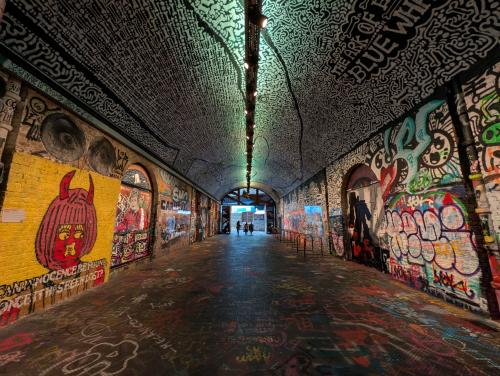
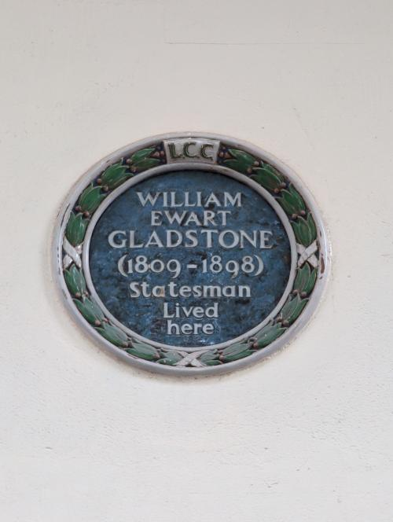
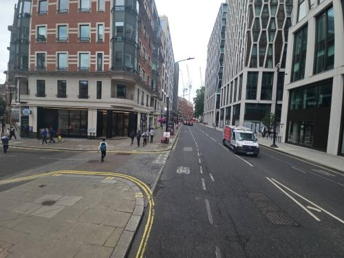
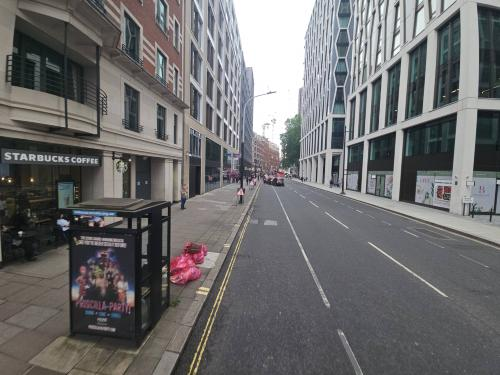
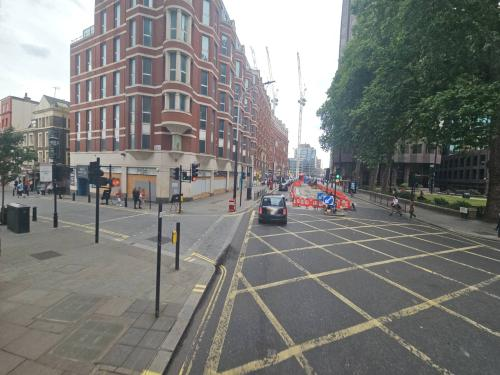
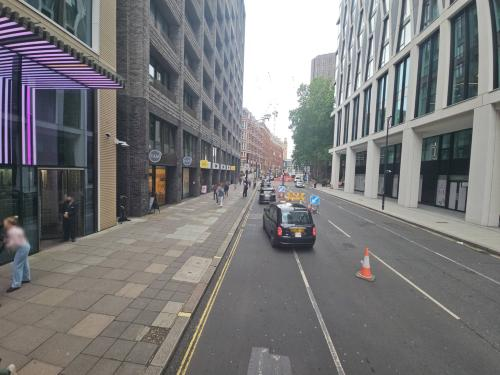
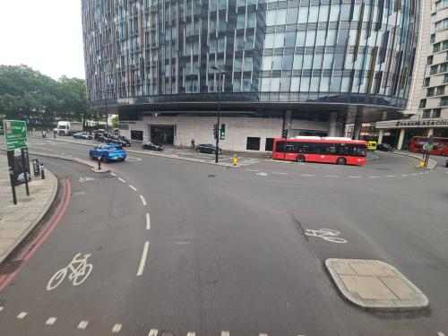
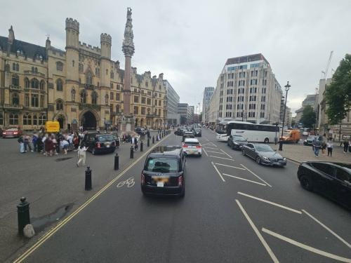
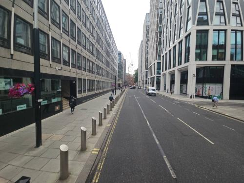

Only machine-screened preview images. Verify the exact building and facade visually before assigning any texture.

OSM building 4245075 — London Waterloo Station
Photo 509c1771-eb72-4a28-b4c3-b35b41c3e895 · 16.89 m from footprint · camera delta 19.48°
License: CC-BY-SA-4.0 · 2025-10-02T16:07:34.445000+00:00
OSM building · Panoramax metadata · HD source URL · local HD image
Identity is not yet verified; do not apply this image to a building.
OSM building 369241364 — Unnamed
Photo 57ea0c49-c739-4334-a2cc-48ee57a5d464 · 8.58 m from footprint · camera delta 24.37°
License: CC-BY-SA-4.0 · 2025-09-03T13:04:44.677000+00:00
OSM building · Panoramax metadata · HD source URL · local HD image
Identity is not yet verified; do not apply this image to a building.
OSM building 203869524 — Unnamed
Photo 1b2b32eb-bba1-41c8-a5c7-525076af9af2 · 22.52 m from footprint · camera delta 20.36°
License: CC-BY-SA-4.0 · 2024-07-05T16:47:23.229000+00:00
OSM building · Panoramax metadata · HD source URL · local HD image
Identity is not yet verified; do not apply this image to a building.
OSM building 203869525 — Department of Health and Social Care
Photo 571669f5-2950-4bdf-be4a-12c21f2d59e1 · 22.93 m from footprint · camera delta 21.3°
License: CC-BY-SA-4.0 · 2024-07-05T16:47:27.200000+00:00
OSM building · Panoramax metadata · HD source URL · local HD image
Identity is not yet verified; do not apply this image to a building.
OSM building 113115179 — Unnamed
Photo 41700c8c-abf8-4e78-836a-1de3259e882d · 21.54 m from footprint · camera delta 24.1°
License: CC-BY-SA-4.0 · 2024-07-05T16:47:59.188000+00:00
OSM building · Panoramax metadata · HD source URL · local HD image
Identity is not yet verified; do not apply this image to a building.
OSM building 203869536 — Unnamed
Photo b65a17ec-bbec-47b0-867e-df5ce59198cd · 26.64 m from footprint · camera delta 18.7°
License: CC-BY-SA-4.0 · 2024-07-05T16:47:48.161000+00:00
OSM building · Panoramax metadata · HD source URL · local HD image
Identity is not yet verified; do not apply this image to a building.
OSM building 31202714 — Unnamed
Photo 97e934a0-4c30-45f1-8c5a-b3d99eab069f · 27.57 m from footprint · camera delta 18.62°
License: CC-BY-SA-4.0 · 2024-07-05T16:40:30.280000+00:00
OSM building · Panoramax metadata · HD source URL · local HD image
Identity is not yet verified; do not apply this image to a building.
OSM building 1149973649 — Unnamed
Photo f8d87c2e-d229-4540-a437-e6d4a4d0e2d8 · 26.64 m from footprint · camera delta 22.27°
License: CC-BY-SA-4.0 · 2024-07-05T16:45:56.197000+00:00
OSM building · Panoramax metadata · HD source URL · local HD image
Identity is not yet verified; do not apply this image to a building.
OSM building 1122580922 — Paragon East
Photo a69adf6f-2a4d-4d5a-a050-5c618d0f22c8 · 33.31 m from footprint · camera delta 23.16°
License: CC-BY-SA-4.0 · 2024-07-05T16:47:11.231000+00:00
OSM building · Panoramax metadata · HD source URL · local HD image
Identity is not yet verified; do not apply this image to a building.